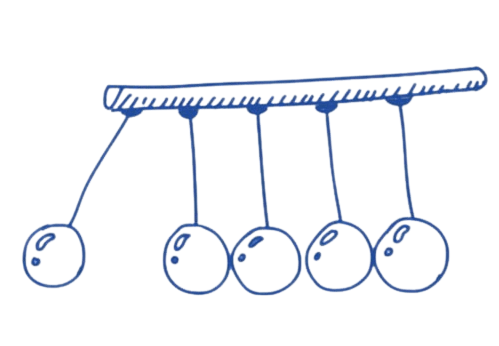

=
BCS Department
Code is like humor. When you have to explain it, it’s bad. – Cory House
To find out first 100 prime numbers
To compute exponential zeroes
To sum square of all integers from 1 to 5
To sort numbers in descending order
To find integration using Simpson's 1/3
rd
rule
#include <stdio.h> int is_prime(int n) { if (n <= 1) { return 0; } if (n <= 3) { return 1; } if (n % 2 == 0 || n % 3 == 0) { return 0; } for (int i = 5; i * i <= n; i += 6) { if (n % i == 0 || n % (i + 2) == 0) { return 0; } } return 1; } int main() { int count = 0; int num = 2; // Start with the first prime number, 2. printf("First 100 prime numbers:\n"); while (count < 100) { if (is_prime(num)) { printf("%d ", num); count++; } num++; } printf("\n"); return 0; }
Copy!
#include<stdio.h> int main() { int n, t1 = 0, t2 = 1, nextTerm; printf("Enter the number of terms: "); scanf("%d", &n); for (int i = 1; i <= n; ++i) { printf("%d, ", t1); nextTerm = t1 + t2; t1 = t2; t2 = nextTerm; } return 0; }
Copy
#include<stdio.h> int main() { int sum = 0; for(int i = 1; i <= 5; i++) { sum += i*i; } printf("Sum of squares: %d", sum); return 0; }
Copy
#include <stdio.h> int main() { int i, n; float arr[100]; printf("Enter the number of elements (1 to 100): "); scanf("%d", &n); for(i = 0; i < n; ++i) { printf("Enter Number %d: ", i+1); scanf("%f", &arr[i]); } for(i = 1; i < n; ++i) { if(arr[0] < arr[i]) arr[0] = arr[i]; } printf("Largest element = %.2f", arr[0]); return 0; }
Copy
Copy

Sem V
Paper-I
'Y' by vibration of wooden scale
Moment of inertia by bifilar suspension
Surface tension by Fergusson Method
Self Induction by Anderson's bridge
Core losses in Transformers
Paper-II
Factorial of a number using simple and recursive method
To find out the first 100 Prime Numbers
Position-time data using kinematic equations
Pressure using Van der Waal's Equations
Roots of Polynomial (Newton-Raphson Method)
Numerical integration of Trapezoid rule
Numerical integration by Simpson 1/3rd rule
Sem VI
Paper-I
'Y' by vibration of wooden scale
Moment of inertia by bifilar suspension
Surface tension by Fergusson Method
Self Induction by Anderson's bridge
Core losses in Transformers
Paper-II
Factorial of a number using simple and recursive method
To find out the first 100 Prime Numbers
Position-time data using kinematic equations
Pressure using Van der Waal's Equations
Roots of Polynomial (Newton-Raphson Method)
Numerical integration of Trapezoid rule
Numerical integration by Simpson 1/3rd rule
Physics
Submenu Item 1
Submenu Item 2
Compilers
Coding C(APP)
C Compiler
Python Compiler
Physics
Reference books
'Y' by vibration of wooden scale
Moment of inertia by bifilar suspension
Surface tension by Fergusson Method
Self Induction by Anderson's bridge
Core losses in Transformers